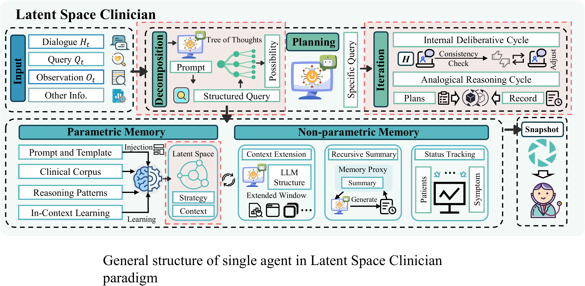
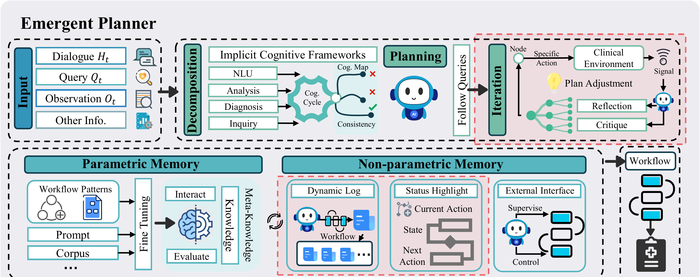
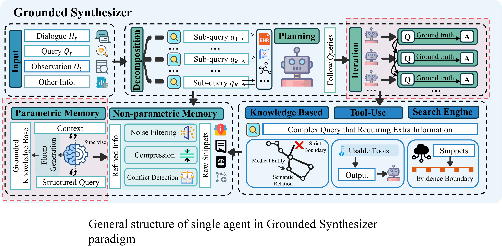
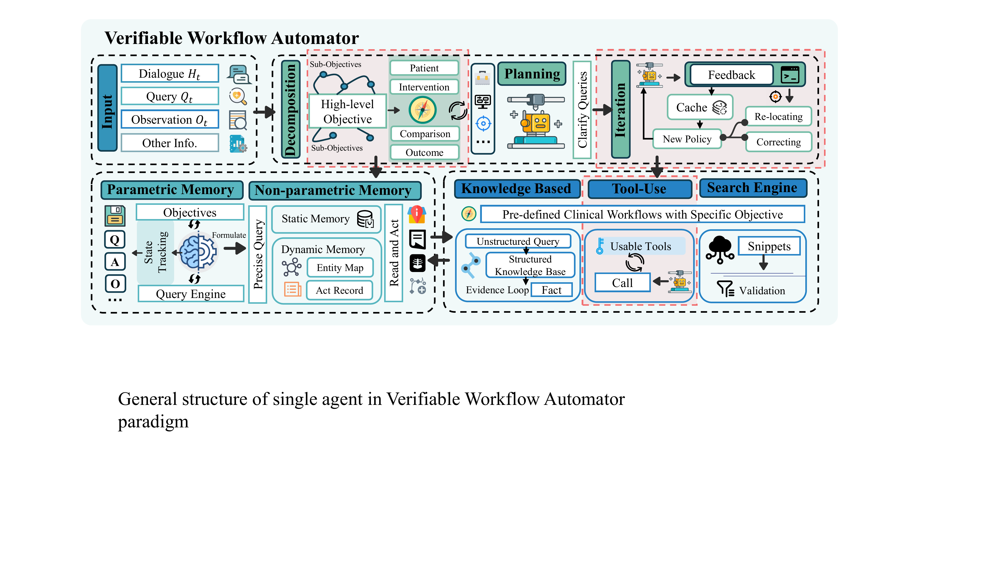

Clinical dialogue demands both empathetic fluency and the rigorous precision of evidence-based medicine. While LLMs possess unprecedented linguistic capabilities, their reactive, stateless architecture favors probabilistic plausibility over factual veracity. This limitation has catalyzed a paradigm shift from generative text prediction to agentic autonomy, where the model acts as a reasoning engine with deliberate planning and persistent memory. We introduce a novel taxonomy along the orthogonal axes of knowledge source and agency objective, categorizing methods into four archetypes that reveal how architectural choices balance autonomy and safety across the entire cognitive pipeline.
Four Agentic Paradigms
Methods are categorized along two axes: knowledge source (implicit vs. explicit) and agency objective (event cognition vs. goal execution).

LSC
Latent Space Clinicians
Leverage the LLM's internal knowledge for creative clinical synthesis, trusting emergent reasoning to function like an experienced assistant.

EP
Emergent Planners
Grant the LLM high autonomy to dynamically devise multi-step plans, independently determining necessary steps for complex clinical goals.

GS
Grounded Synthesizers
LLMs serve as natural language interfaces to reliable external sources, retrieving and synthesizing from verifiable knowledge.

VWA
Verifiable Workflow Automators
Agent autonomy is strictly constrained within pre-defined, verifiable clinical workflows, ensuring maximum safety and predictability.

Taxonomy framework along the axes of knowledge source and agency objective, with cognitive pipeline components for each paradigm.